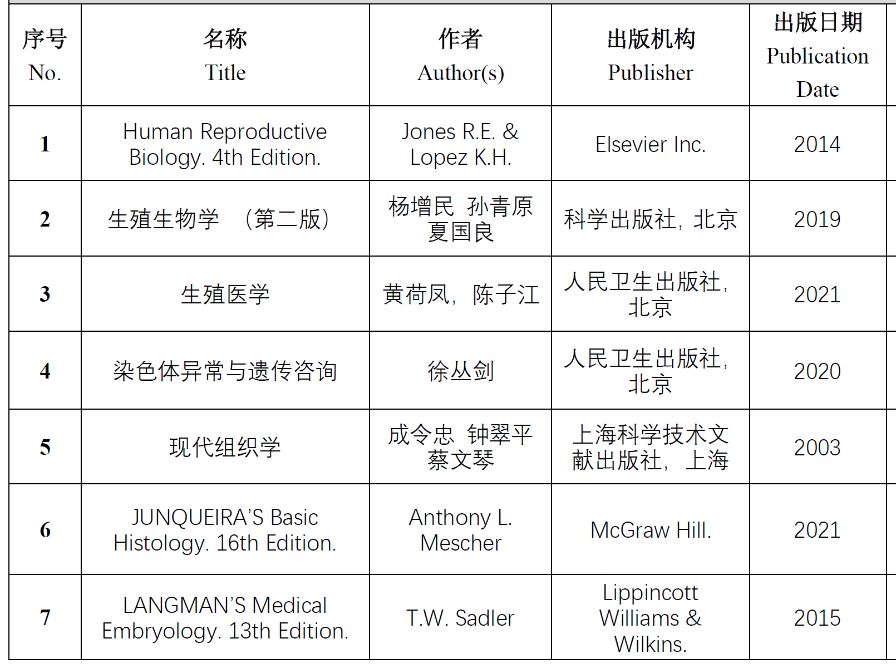

2026春 · MED60072.01 · 陈红、陈国武、伍俊萍、张立、杨慧娟、梁国庆、朱晨
来源：复旦教务系统教学大纲，本轮使用已授权账号下载。原始正文与考核信息；去除联系方式和网页脚本，内嵌图片按原字节去重保存。
生殖生物学是研究整个生殖过程的一门学科。它既是发育生物学的一个分支，也是生理学的一个分支，是融合现代生物化学、细胞生物学、内分泌学和分子生物学等学科的交叉学科。生殖医学是一门综合性的新兴学科，涉及生育、不育、节育和出生缺陷等，主要任务是通过常规的诊断和治疗措施，将现在的各种生殖技术应用于不育病人，使其产生后代。本课程通过围绕生殖细胞发育成熟、受精以及胚胎发育等重要生物学事件，结合临床常见的生育问题，如1）不孕不育；2）生殖肿瘤；3）出生缺陷，开展相关发病机制的探讨，了解如何在治疗肿瘤的同时，保存其生育力，以及出生缺陷的早期筛查与预防机制等。开展以基础理论与临床病例相结合的自主学习方式，将有助于提高研究生的理论水平，为基础研究与临床实践打好基础。
Reproductive biology & medicine is a subject integrated with both basic and clinical subject in reproductive medicine. They are independent subjects but closely related to each other. Reproductive biology is an inter-discipline which is full of development biology and physiology, with the focus on the study of whole reproduction process in human body. Reproductive medicine concentrates in the study of clinical diagnosis and therapy in fertility/infertility, contraception, and birth defect as well. After then, applied with various assisted reproductive techniques, a newborn baby could be delivered successfully. This curriculum is thus organized with the format of case-based learning, including 3 cases, 1) infertility, 2) fertility reserve for cancer, 3) birth defect, from clinical cases of reproductive medicine to basic theory of reproductive biology. This curriculum driven with the format of case-based learning will provide a solid foundation for students who have the pursuit of reproductive biology & medicine or for their own personal interest.
1）熟练掌握生殖生物学的基础知识，并能理论与实际相结合，灵活应用于临床生殖医学的各个方面，为解决临床上遇到不孕不育难题提供理论支持；
2）了解生殖医学与生殖生物学在生殖健康、不孕不育等方面的研究进展，为临床实践和科学研究打下牢固的理论和实践基础。
The aim of this curriculum is firstly to better understand the main theory in the key reproductive process, including germ cell production, fertilization, and embryo development as well, and secondly to explore the pathogenesis of 3 cases mentioned above, to understand the best strategy for reserving fertility and preventing birth defect. This curriculum driven with the format of case-based learning will provide a solid foundation for students who have the pursuit of reproductive biology & medicine or for their own personal interest.
本课程通过围绕生殖细胞发育成熟、受精以及胚胎发育等重要生物学事件，结合临床常见的生育问题，如：1）不孕不育；2）生殖肿瘤；3）出生缺陷，开展基于临床常见生殖相关疾病的发病机制的课堂理论学习、临床病例分析与文献回顾探讨，掌握不孕不育的发病机制与治疗方案选择，了解如何在治疗肿瘤的同时，保存其生育力，以及出生缺陷的早期筛查与预防机制等。
| 周次 | 日期 | 星期 | 节次 | 上课内容 |
| 5 | 3月31日 | 二 | 11-13节 | 1、绪论、生殖细胞发生与成熟 |
| 6 | 4月7日 | 二 | 11-13节 | 2、受精和胚胎早期发育 |
| 7 | 4月14日 | 二 | 11-13节 | 3、性别决定与生殖器官发育 |
| 8 | 4月21日 | 二 | 11-13节 | Case Study 1: Infertility 男性不育临床研究进展 |
| 9 | 4月28日 | 二 | 11-13节 | Case Study 2: Infertility 女性不孕临床研究进展 |
| 10 | 5月5日 | 二 | 11-13节 | 讨论课1 |
| 11 | 5月12日 | 二 | 11-13节 | Case Study 3: Reproductive tumor 男性生殖肿瘤与生育力保护临床研究进展 |
| 12 | 5月19日 | 二 | 11-13节 | Case Study 4: Reproductive tumor 女性生殖肿瘤与生育力保护临床研究进展 |
| 13 | 5月26日 | 二 | 11-13节 | 男性生育力保护与保存研究进展 |
| 14 | 6月2日 | 二 | 11-13节 | Birth Defects 出生缺陷早期筛查与诊断的研究进展 |
| 15 | 6月9日 | 二 | 11-13节 | 不孕不育与出生缺陷的遗传咨询 |
| 16 | 6月16日 | 二 | 11-13节 | 讨论课2 |

| 项目 | 比例 | 评定说明 |
|---|---|---|
| 出勤Attendance | 12.0% | 1分/课次; 1 mark/class |
| 课堂表现Participation | 18.0% | 积极提问，认真回答问题。Active class performance 1.5分/课次; 1.5 mark/class |
| 作业/实验/实践Assignment | 35.0% | 基础理论准确掌握，临床检测指标及意义清晰。 Better understand both of theory and clinical significance |
| 课题论文Research Paper | 35.0% | 基础与临床相结合的病例分析，发病机制分析透彻。 Better elaborate the pathogenesis of cases |